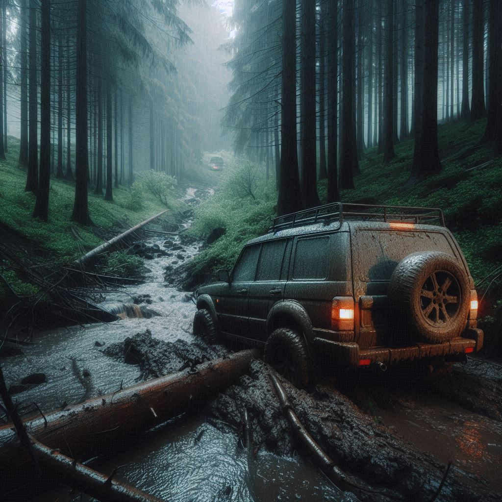
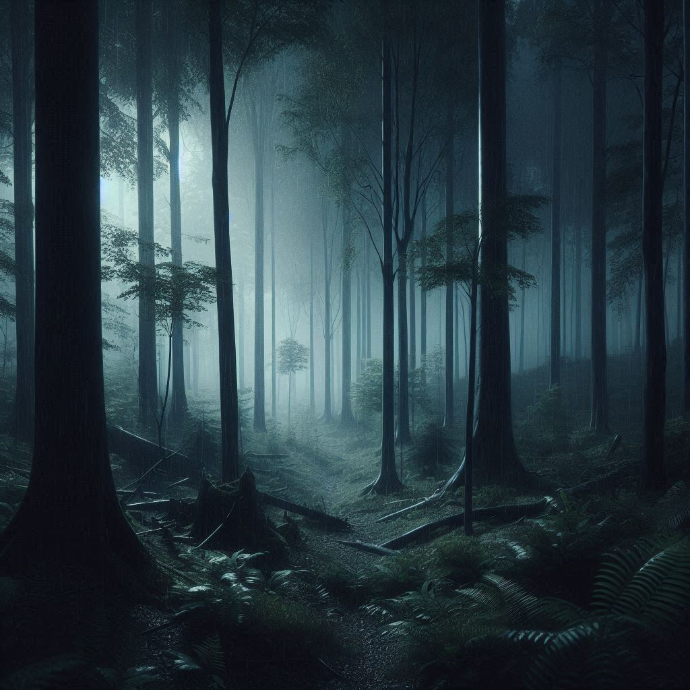
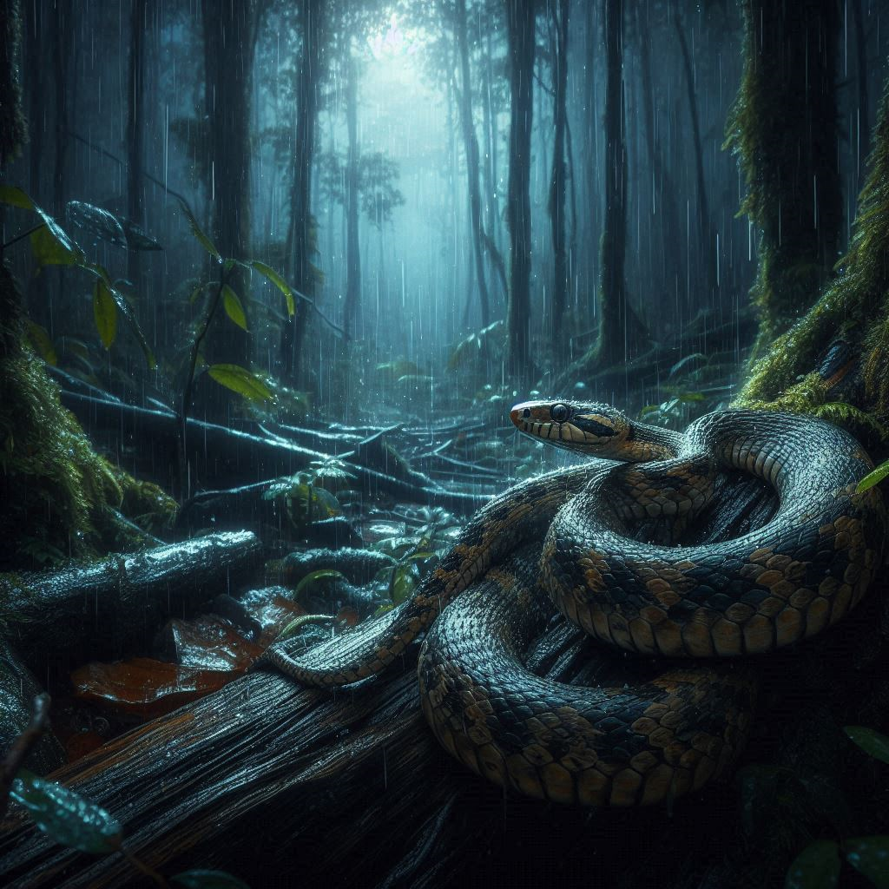

Você estava andando de carro e pegou um atalho em uma estrada de terra para chegar mais rápido ao destino, mas estava escuro e chovendo e você perde o controle do carro, sai da estrada e o carro fica atolado na lama. Escolha o que você irá fazer:

Você não conseguiu tirar o carro da lama. Escolha o que você irá fazer:
Depois de um tempo, você ficou com fome. Escolha o que você irá fazer:

Escolha a primeira coisa que você irá fazer:
Você estava procurar um galho, mas apareceu uma cobra. Escolha o que você irá fazer:

Não tem sinal de celular. Escolha o que você irá fazer:
Você percebeu que não tem sinal de celular e depois de um tempo você viu uma cobra. Escolha o que você irá fazer:
Você encontrou frutas, mas ficou perdido. Escolha o que você irá fazer:
Você conseguiu montar uma armadilha, mas não conseguiu pegar nenhum animal. Escolha o que você irá fazer: